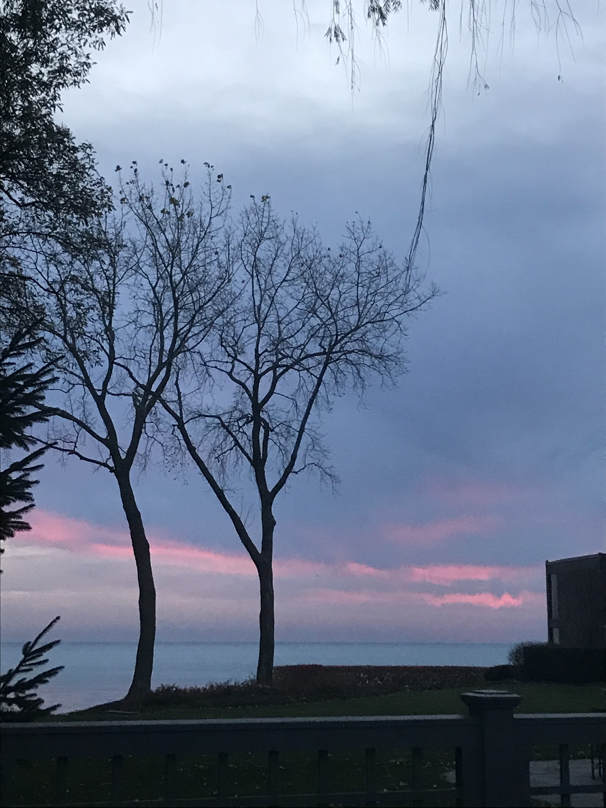
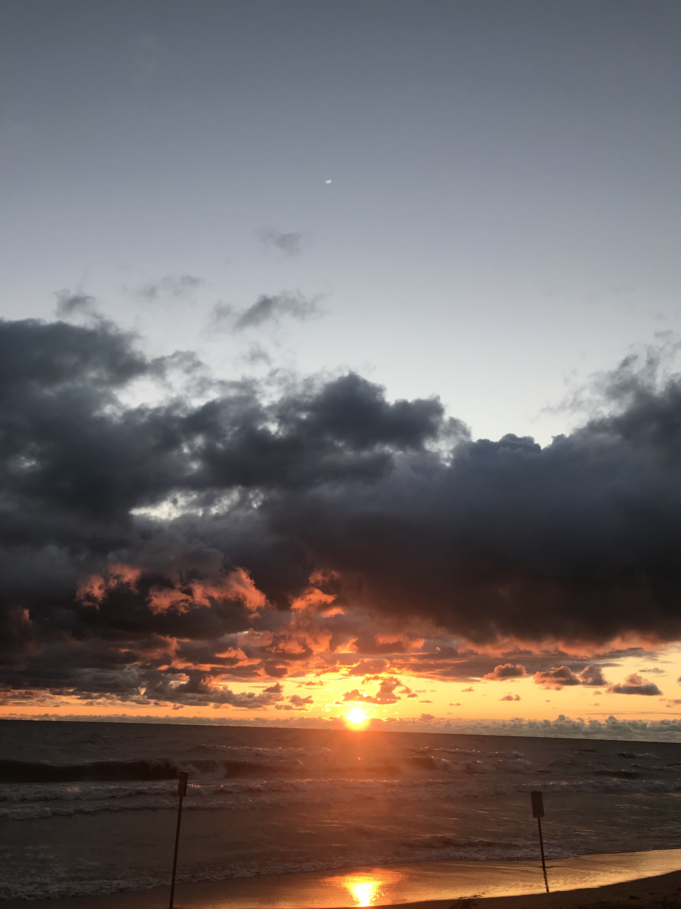
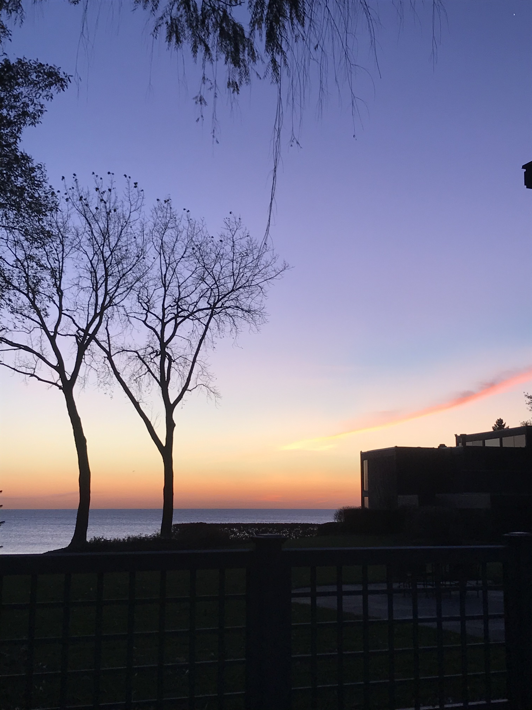

Nick Lohr
Department of Mathematics
Purdue University
Office:
E-mail: nlohr at purdue.edu
I am a Golomb Visiting Assistant Professor at Purdue University studying semiclassical analysis. I obtained my Ph.D. in 2025 at Northwestern University under the supervision of Jared Wunsch and Steve Zelditch.
CV
Papers
Scattering theory
-
The asymptotic structure of forward scattering (with Ethan Sussman, Izak Oltman, and Joey Zou), submission soon.
Perturbed plane waves are fundamental objects in scattering theory on Euclidean space and asymptotically Euclidean spaces. In this paper, we investigate the structure of perturbed plane waves in the forward direction, in which the outgoing spherical wave is typically singular and conjoined to the incoming plane wave. Melrose & Zworski provided a microlocal description (in the more general setting of asymptotically conic manifolds) using their notion of Lagrangian distributions associated to pairs of intersecting Legendrian submanifolds. Here, we revisit the problem, seeking a more elementary description in terms of physical-space asymptotics. These are specified using a two-faced compactification \(X\hookleftarrow \mathbb{R}^d\), with one face for each asymptotic regime. The quantum inverted harmonic oscillator arises as a model problem at the front face.
-
On the intertwining map between Coulomb and hyperbolic scattering, Analysis and Partial Differential Equations, 19(2026), no. 6, 1225–1250
We construct a unitary operator between Hilbert spaces of generalized eigenfunctions of Coulomb operators and the Laplace-Beltrami operator of hyperbolic space that intertwines their respective Poisson operators on \(L^2(\mathbb{S}^{d-1})\). The constructed operator generalizes Fock's unitary transformation, originally defined between the discrete spectra of the attractive Coulomb operator and the Laplace-Beltrami operator on the sphere, to the setting of continuous spectra. Among other connections, this map explains why the scattering matrices are the same in these two different settings, and it also provides an explicit formula for the Poisson operator of the Coulomb Hamiltonian.
Semiclassical measures and Wigner distributions
-
Semiclassical measures through Coulomb collisions, submitted.
We prove that \(\mu\) is a semiclassical measure associated to a sequence of eigenfunctions of energy \(E<0\) of the attractive Coulomb operator if and only if $\mu$ is a probability measure on the energy (hyper)surface \(\Sigma_E\) invariant under the regularized Kepler flow due to Moser. The converse was shown in recent work by the author, and the present article proves the other direction (as well as an independent proof of the converse). We prove the main theorem for a general symbol class allowing certain non-decay at infinity, which implies that semiclassical measure mass entirely reflects off of the origin. In the special case of semiclassical measures of sequences of eigenfunctions of the exact Coulomb operator, this article solves an open problem posed by Keraani. The main tools include the celebrated Moser-Fock map along with a technical operator extension lemma in \(\Psi_{\hbar}^0(\mathbb{S}^d)\), which utilizes standard eigenfunction concentration bounds.
-
Semiclassical measures of Eigenfunctions of the attractive Coulomb operator, Annales Henri Poincaré
27(2026), 2743–2768
We characterize the set of semiclassical measures corresponding to sequences of eigenfunctions of the attractive Coulomb operator \(\widehat{H}_{\hbar}:=-\frac{\hbar^2}{2}\Delta_{\mathbb{R}^3}-\frac{1}{|x|}\). In particular, any Radon probability measure on the fixed negative energy hypersurface \(\Sigma_E\) of the Kepler Hamiltonian \(H\) in classical phase space that is invariant under the regularized Kepler flow is the semiclassical measure of a sequence of eigenfunctions of \(\widehat{H}_{\hbar}\) with eigenvalue \(E\) as \(\hbar \to 0\). The main tool that we use is the celebrated Fock unitary conjugation map between eigenspaces of \(\widehat{H}_{\hbar}\) and \(-\Delta_{\mathbb{S}^3}\). We first prove that for any Kepler orbit \(\gamma\) on \(\Sigma_E\), there is a sequence of eigenfunctions that converge in the sense of semiclassical measures to the delta measure supported on \(\gamma\) as \(\hbar \to 0\), and we finish using a density argument in the weak-* topology.
-
Scaling asymptotics of Wigner distributions of harmonic oscillator orbital coherent states,
Communications in Partial Differential Equations
48(2023), 415–439
The main result of this article gives scaling asymptotics of the Wigner distributions \(W_{\varphi_N^{\gamma},\varphi_N^{\gamma}}\) of isotropic harmonic oscillator orbital coherent states \(\varphi_N^{\gamma}\) concentrating along Hamiltonian orbits \(\gamma\) in shrinking tubes around \(\gamma\) in phase space. In particular, these Wigner distributions exhibit a hybrid semi-classical scaling. That is, simultaneously, we have an Airy scaling when the tube has radius \(N^{-2/3}\) normal to the energy surface \(\Sigma_E\), and a Gaussian scaling when the tube has radius \(N^{-1/2}\) tangent to \(\Sigma_E\).
Ph.D. Thesis
-
Semiclassical Phase Space Distributions and Scattering Theory of the Harmonic Oscillator and Hydrogen Atom, Northwestern University ProQuest Dissertations & Theses, 2025.
We begin this thesis by reviewing the basics of classical and quantum mechanics, with a focus on the ``hidden'' symmetries of the harmonic oscillator and hydrogen atom. We then give scaling asymptotics of the Wigner distributions \(W_{\varphi_{\hbar,N}^{\gamma}}^{\hbar}\) of isotropic harmonic oscillator orbital coherent states \(\varphi_{\hbar,N}^{\gamma}\) concentrating along Hamiltonian orbits \(\gamma\) in shrinking tubes around \(\gamma\) in phase space. In particular, these Wigner distributions exhibit a hybrid semi-classical scaling. That is, simultaneously, we have an Airy scaling when the tube has radius \(\sim\hbar^{2/3}\) normal to the energy surface \(\Sigma_E^{\osc}\), and a Gaussian scaling when the tube has radius \(\sim\hbar^{1/2}\) tangent to \(\Sigma_E^{\osc}\). Later, we characterize the set of semiclassical measures corresponding to sequences of eigenfunctions of the attractive Coulomb operator \(\widehat{H}_{\hbar}^{\odot}\). In particular, any Radon probability measure on the fixed negative energy hypersurface \(\Sigma_E^{\odot}\) of the Kepler Hamiltonian \(H^{\odot}\) in classical phase space that is invariant under the regularized Kepler flow is the semiclassical measure of a sequence of eigenfunctions of \(\widehat{H}_{\hbar}^{\odot}\) with eigenvalue \(E\) as \(\hbar \to 0\). Finally, we construct a unitary operator between Hilbert spaces of generalized eigenfunctions of Coulomb operators and the Laplace-Beltrami operator of hyperbolic space that intertwines their respective Poisson operators on \(L^2(\mathbb{S}^{d-1})\). The constructed operator generalizes Fock's unitary transformation, originally defined between the discrete spectra of the attractive Coulomb operator and the Laplace-Beltrami operator on the sphere, to the setting of continuous spectra.
Expository work
Senior Thesis
-
Approximating Riemann mappings by circle packings, supervised by Jeffrey Diller
My senior thesis was on approximating Riemann maps \(f:\Omega \to D\) with circle packings. It was based on Terrance Tao’s notes on his blog. My goal was to prove all of the exercises and give more detailed proofs/definitions where I felt needed. This project spanned from Summer 2018-Summer 2019. There is a nice proof of the Riemann mapping theorem for ring domains that doesn’t use Perron’s method or any theory of prime ends, something I could not find in the literature.
Talks
- Ph.D. Thesis Slides (use Adobe Acrobat to see the animations and make sure to click "allow")
Teaching
-
Fall 2026 at Purdue University:
- MA266 Differential Equations (two sections: 083 and 072)
-
Spring 2026 at Purdue University:
- MA265 Linear Algebra (two sections: 225 and 214)
-
Fall 2025 at Purdue University:
- MA265 Linear Algebra (two sections: 501 and 206)
Teaching Assisting
-
Spring 2024 at Northwestern University:
- MATH 218-3 Single-Variable Calculus with Precalculus
- MATH 310-3 Probability Theory and Stochastic Analysis
-
Winter 2024 at Northwestern University:
- MATH 218-2 Single-Variable Calculus with Precalculus
- MATH 310-2 Probability Theory and Stochastic Analysis
-
Fall 2023 at Northwestern University:
- MATH 218-1 Single-Variable Calculus with Precalculus (2 sections)
-
Fall 2022 at Northwestern University:
- MATH 218-1 Single-Variable Calculus with Precalculus
- MATH 450-1 Probability Theory and Stochastic Analysis
-
Winter 2022 at Northwestern University:
- MATH 360-2 MENU Applied Analysis
- MATH 382-0 Complex Analysis and Group Theory for ISP
-
Fall 2021 at Northwestern University:
- MATH 360-1 MENU Applied Analysis
- MATH 381-0 Fourier Analysis and Boundary Value Problems for ISP
-
Spring 2021 at Northwestern University:
- MATH 218-2 Single-Variable Calculus with Precalculus
- MATH 311-3 MENU Probability and Stochastic Processes
- MATH 450-3 Probability Theory and Stochastic Analysis
-
Fall 2020 at Northwestern University:
- MATH 226-0 Sequences and Series
- MATH 250-0 Elementary Differential Equations
-
Summer 2019 at University of Notre Dame:
- MATH 14360 Calculus B
-
Spring 2018 at University of Notre Dame:
- MATH 20630 Intro to Mathematical Reasoning
Other
More About Me
- I have two older sisters, Emily Dumais and Meghan Jones, and one younger sister, Caroline Lohr. My mom, Kelly Lohr, is the best Kindergarten teacher in the world, and my dad, Brian Lohr, is the Director of Province Development for the Congregation of Holy Cross and consults in college advisory. Here is a pdf of our family cookbook
-
I have been into magic and card handling for most of my life. Here is some cool slow-mo stuff (sometimes it take a minute or so to load):
Over Summer and Fall 2020, I religiously woke up before 5am to go on runs twice a week. Here are some pictures I took along the way.



Last updated: